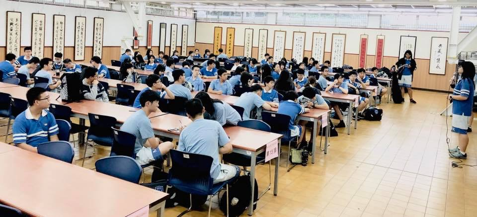
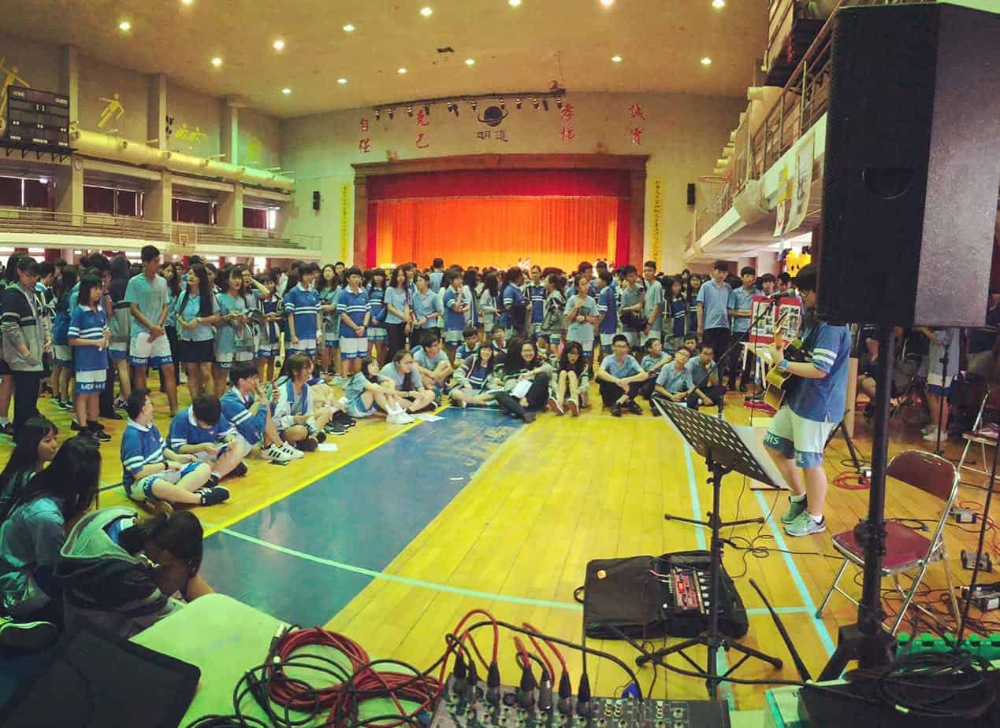
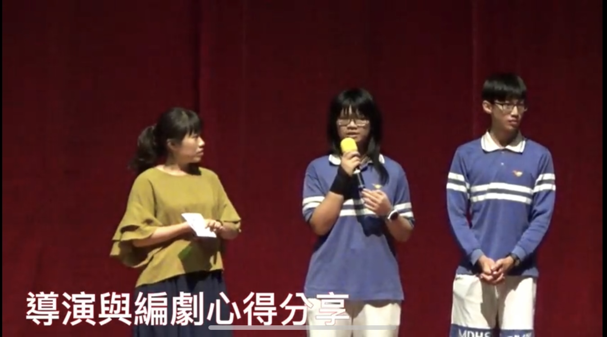
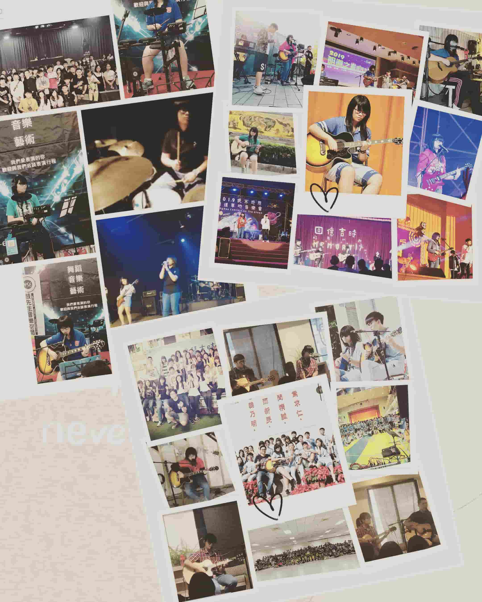
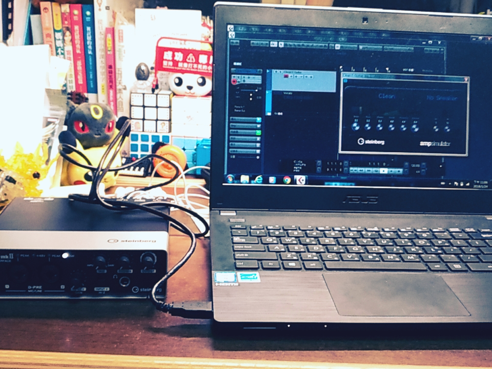
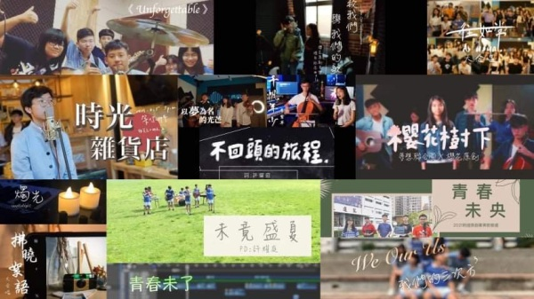
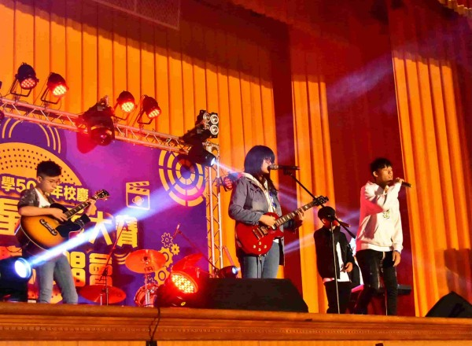

經歷
從高一開始就擔任吉他社的教學，一個人要帶12個國中的初學者，剛開始教學的時候他們的反應都冷冷的，讓我更緊張，每次上完課我的背都全濕，講話也沒有自信、不肯定，但漸漸的熟絡起來後，上課氣氛也變的輕鬆，出席率也變的穩定。
高二時我接下了社長的位子，全盛時期總共有113位社員，是吉他社的鼎盛時期，在擔任社長的期間，我培養了溝通技巧和組織的能力，每次開會遇到癥結點時，我總會收集其他幹部的想法並統整分析，找到一個最佳的解決方法，在爭執時，如果我是對的一方，我也會積極維護我的想法，我始終相信熱烈的爭辯，不信無聲的和諧。在社團期間也參與許多次演出，我不僅是表演者也是工作人員，不僅是總召還是機動組組頭，整場演出都在跑來跑去，忙東忙西，因此都沒有機會好好欣賞其他人的演出。
在當社長的同時，我接下了班際英文話劇比賽的導演一職，那讓我雙頭燒的蠟燭燃燒的更旺，且在過程中與班上也因為劇本和選角有不小的爭執，但有了這次當導演的經驗，讓我在之後的影片製作執行上更為順利。
我是一個熱愛舞台的人，曾經一年在校內外接了18場大大小小的表演，不過表演的時間也常常撞到補習時間，因此與家人常常會因為該不該接這場表演而吵架，但我在表演結束後都有去將缺的課補齊。其中有一場表演讓我十分灰心，因為控台的一些疏失，還有我自己的一點失誤，表演結束後收到很多負評，那段時間本來打算後面的表演都不接了，轉變的契機是我無意間看到了一場表演，那個樂團的主唱在台上十分的享受，重點是看起來非常的開心，他喚起了我的初衷，上台不是為了名利，而是在充分準備的前提下，展現在音樂中最開心的那個自己。
錄音工程在我生活中也佔了很大的一個部分，國中開始自學，這一路上也遇到了很多的貴人，不求回報的教導我，給我練習的機會，第一個教我錄音混音的就是我現在工作室的老闆，後來他也將我介紹給他的老師，讓我有機會去更大更有規模的錄音室觀摩實習，近期也感謝櫻花原創音樂團隊合作的錄音室的老闆放心把錄音室交給我們自己操作，讓我完整體驗到一個錄音師工作一整天下來有多號精神與體力。
還記得我的第一套簡易錄音設備是我省著早餐錢，一點一滴的存下來的，剛開始我學習和成長的十分緩慢，直到去年的畢業季，加上之後的疫情期間，因為錄音設備的更新，我希望自己不要成為設備用的非常好，能力卻跟不上設備等級的人，也因為我很不喜歡腦中有許多畫面想法，但卻因為自己的技術問題而無法呈現出來，因此我努力精進自己的功力，透過在那段期間我跟著團隊總製作做案子，還有自己的練習，我的能力比前幾年突飛猛進，但離老師們還是有很大一段距離，還要再接再力。暑假期間，我的團隊每年都會辦大合唱，但因為去年疫情大家沒法相聚，我們變用線上的方式，大家自己在家裡用手機錄製，再藉由製作團隊來處理，我平均一天要做8個小時的人聲處理，扎扎實實的訓練了一個月，讓我人聲處理的速度變快了許多。
在能力比較穩定成長後，我透過工作室的老闆開始接一些學校或者簡單的案子，直到現在我已經是能獨當一面的錄音師，但混音還是需要老師的指點。
上面有提到我的團隊，嚴格來說應該是「我所在」的團隊，因為我不是老闆，只是製作人之一，我們團隊叫做「櫻花原創音樂」，是因為團隊第一首歌「櫻花樹下」而命名，櫻花的花語是「熱烈的生命和永不放棄的追尋」，我們希望用溫暖的歌帶給大家力量和希望，讓聽眾能將自身故事帶入，擁有不同的感觸，也獲得不同的想法和面對的勇氣。
團隊中的成員很多都是在比賽中認識的，我也不例外，在2019年的校內歌唱比賽，我遇到了櫻花原創，幸運的我獲得了勝利，但在與他們相處的過程中我發現，一群志同道合的人一起完成一件事的過程本身，比結果來的更為重要，後來我家入了櫻花原創，成為第二代的成員。
在團隊頻道中我發表的第一首詞曲創作歌曲叫《以夢為名的光芒》，內容寫的是在成長的路上我們就像在黑暗中摸索，而身邊的朋友老師家人就像一道道的光照入黑暗中，但哪一道光芒才能真正但我走出黑暗，而其中一句歌詞-「迷戀舞台此生離不開，請原諒我叛逆的期待」也是我對於生活的吶喊，希望有一天我能不負期望，成為一個令父母驕傲的孩子。